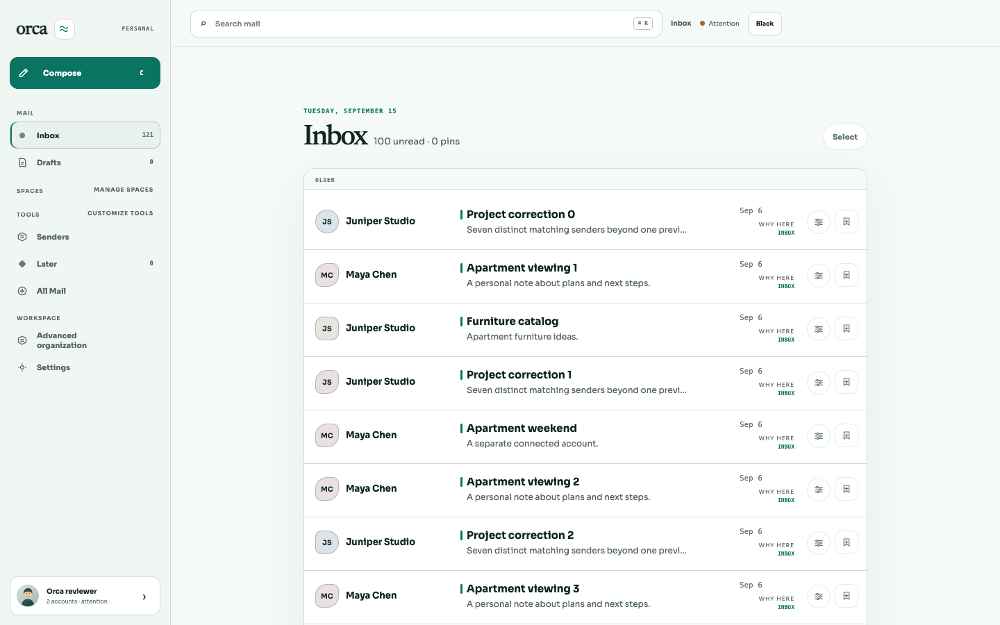
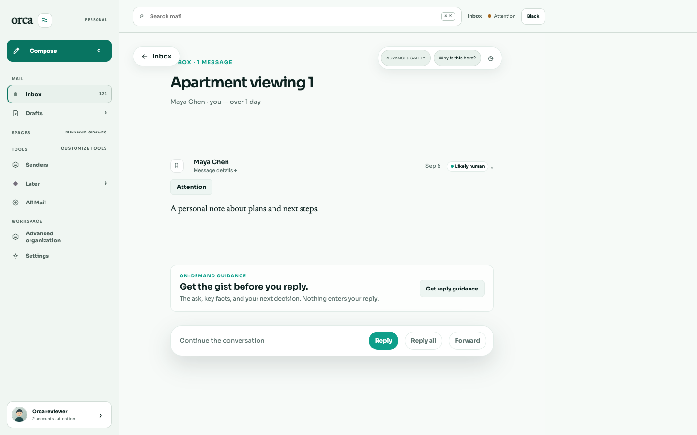
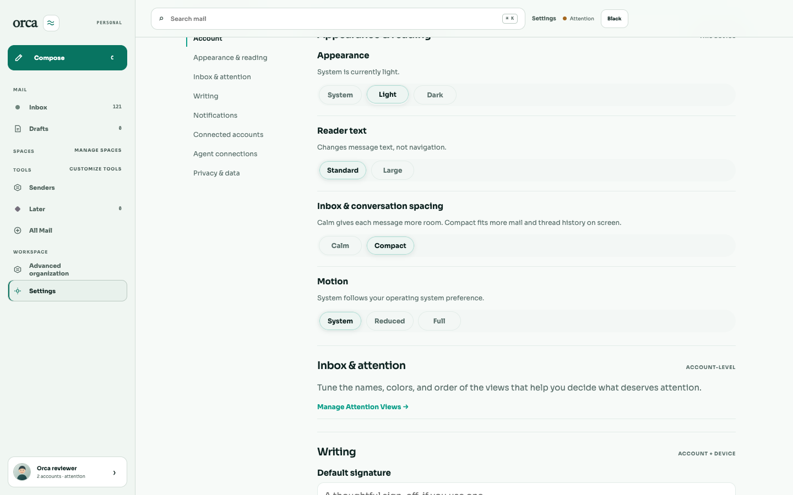
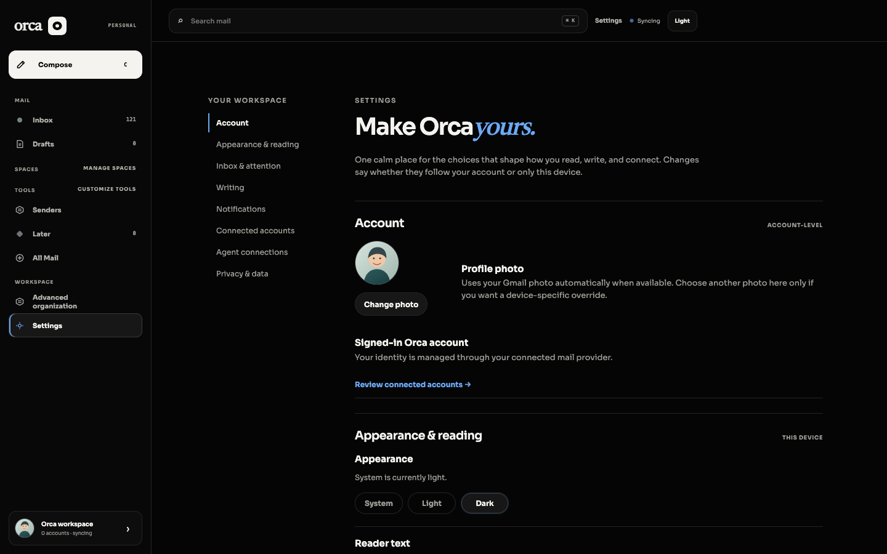
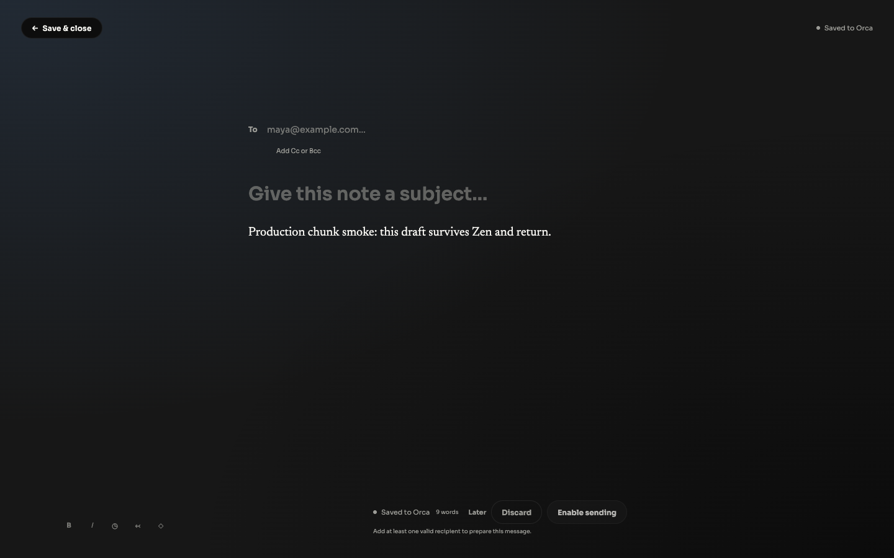
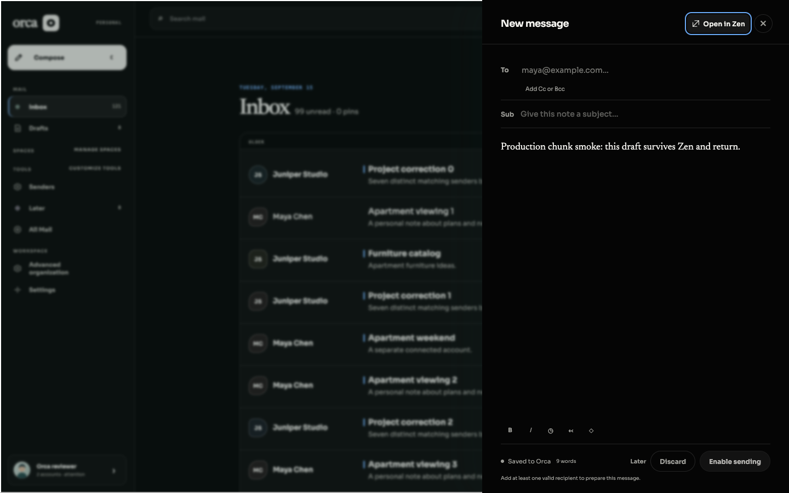
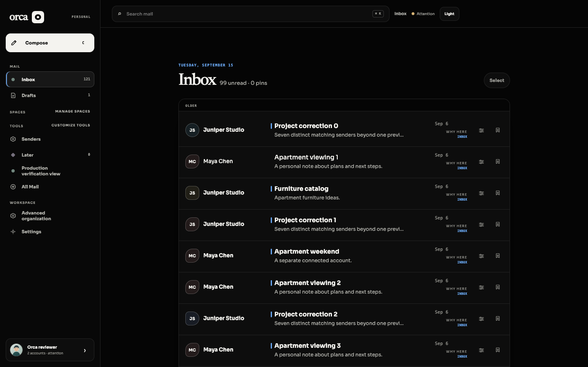
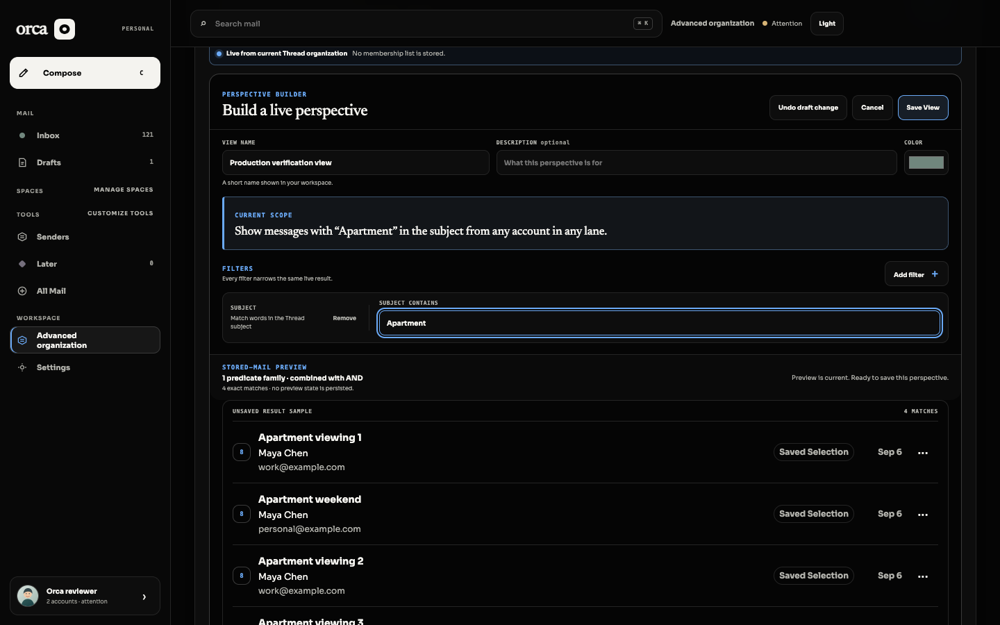
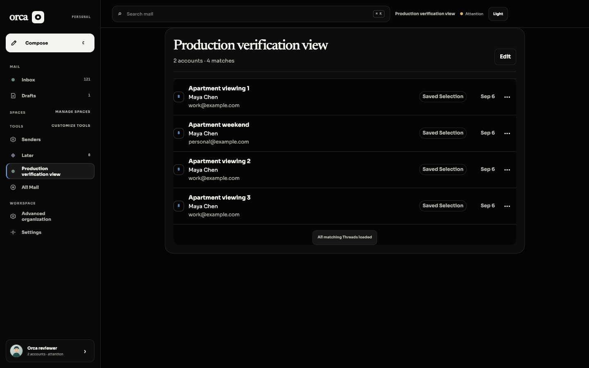

PASS — bounded production chunk/context smoke, with audit caveats. Built source HEAD: 5ba99d9194c311fd5c0c23c684d3af5ef9559a67. Parent integrated test-only da164c2 afterward; runtime unchanged per parent. Commands: bun apps/web/scripts/check-bundle.ts > /tmp/orca-feedback-final-bundle.log 2>&1 bun scripts/.tmp-feedback-production.ts --built --provider-refresh-noop > /tmp/orca-feedback-production/server.log 2>&1 /opt/homebrew/bin/agent-browser --session orca-feedback-production --headed false open http://127.0.0.1:53972/v1/review/login Every browser operation used this named headless agent-browser session, viewport1440x900. Bundle check exit0: max JS442.04kB; no static cycles; no development feedback. Organization chunk eagerly imported; no lazy-transfer claim. PASS inbox + reader body; manual .refresh-button click leaves populated inbox, settles to Refresh; provider refresh explicitly no-op fixture. PASS Compose body 'Production chunk smoke: this draft survives Zen and return.' → Open in Zen → Escape retains exact text; no mail sent. PASS Organization → Views → New View → name Production verification view → subject Apartment → preview4 matches → Save View → saved workspace4 matches across2 fixture accounts. PASS Settings Light, Dark, reload /settings#appearance retains dark selection and usable Settings. Reload retains URL; no claim that initial scroll selects Appearance (screenshot shows Account initial position). All6 requested production JS/CSS assets HTTP200, including eager Organization chunk. No missing asset requests. Console messages[]. Audit caveats: page errors contain2 'AbortError: Transition was skipped' with no stack/url. runUiTransition byte-identical to origin/main; likely existing view-transition cancellation, but exact triggering action and baseline runtime reproduction not proven. Therefore zero page errors is NOT claimed. Settings requests /v1/mcp/connections twice404 in disabled-agent harness; no other4xx/5xx. No functionality loss observed. Scope: isolated generated SQLite fixture only; no provider OAuth/sync/send, migrations on user database, exhaustive UI-state matrix, or redundant tests/typechecks. No tracked product edits/commits. Cleanup verified separately in cleanup.txt.








